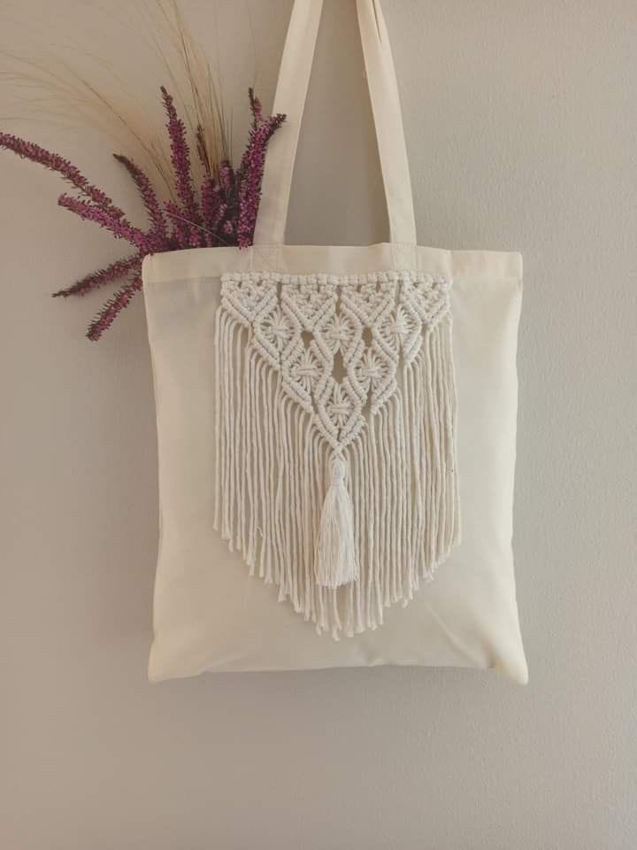
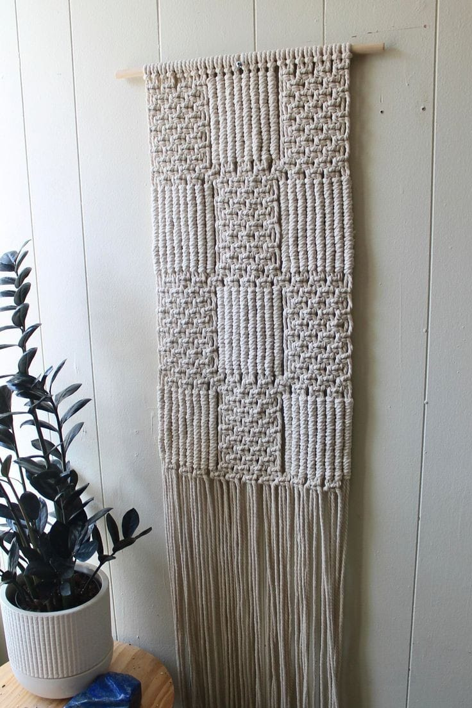
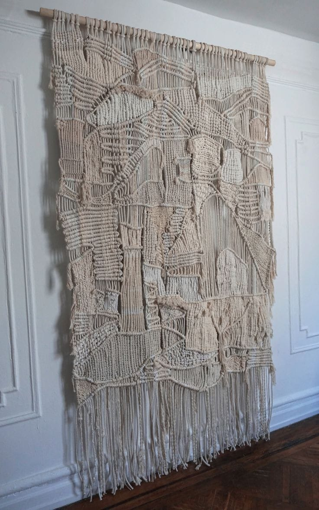
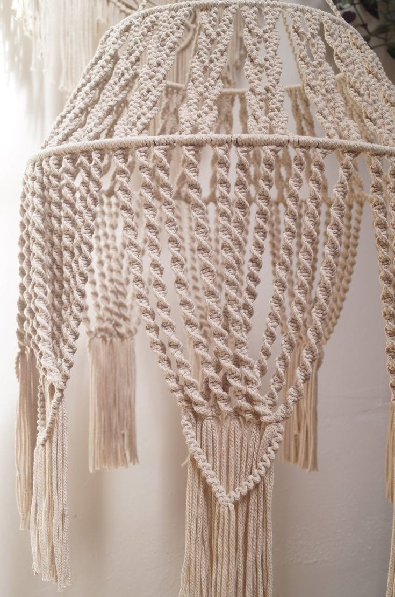
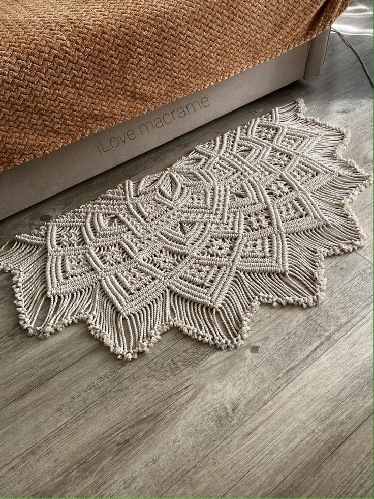
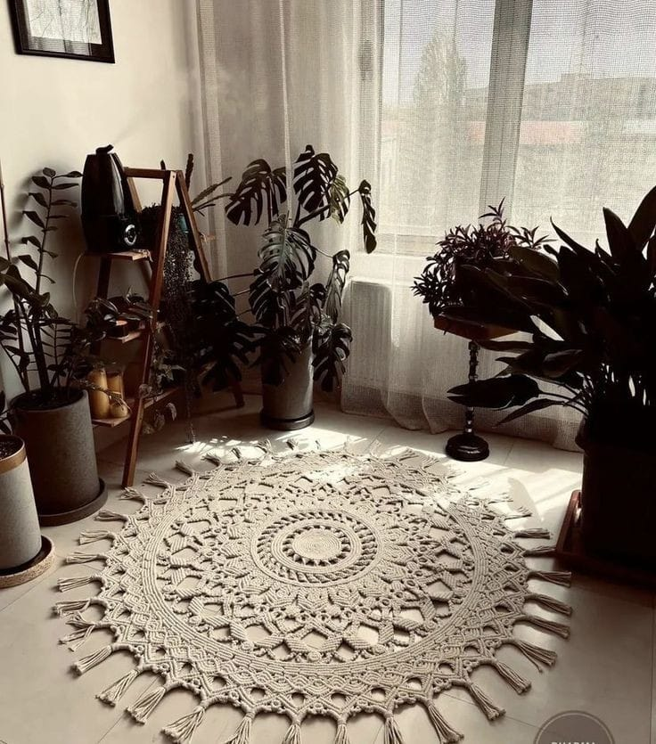
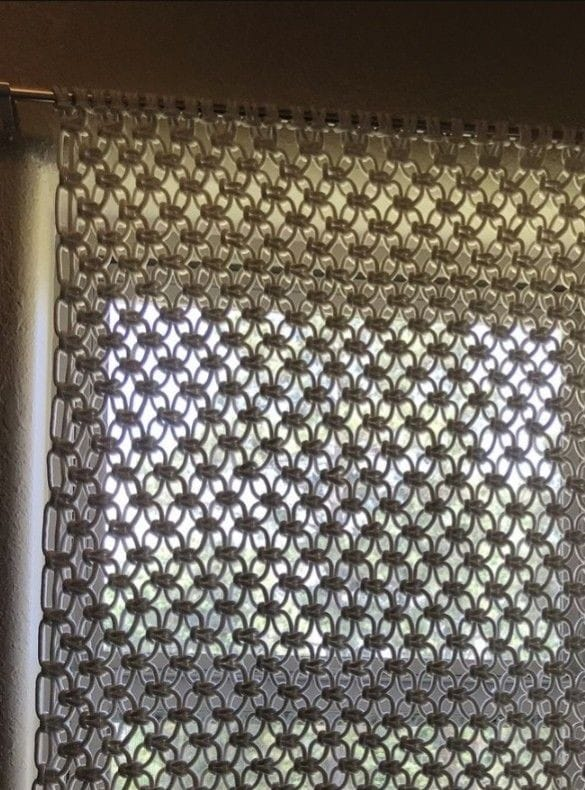
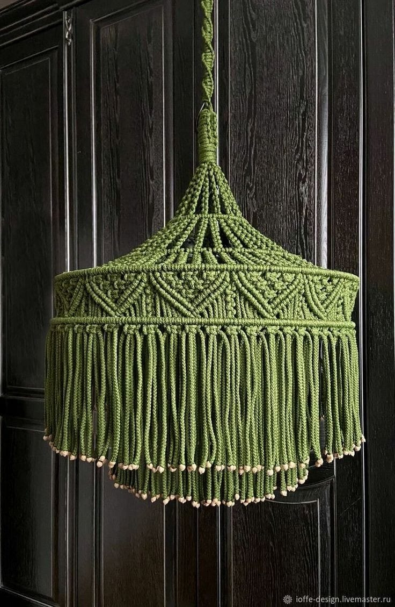
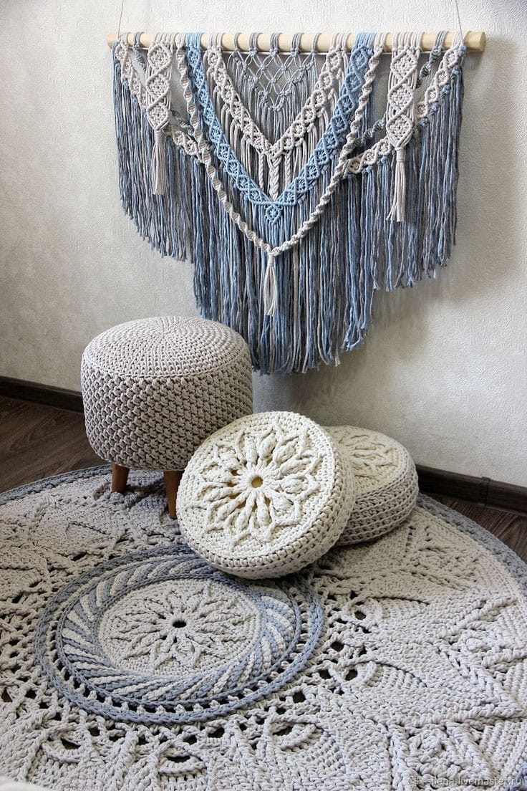

A história da Rain Atelier é uma jornada inspiradora de como uma ideia simples pode se transformar em um sucesso no cenário brasileiro da moda online. Tudo começou com a paixão de sua fundadora, Rayane, por arte e design. Desde jovem, Rayane sempre demonstrou um talento natural para criar peças únicas e originais, desde acessórios até roupas.
Rayane cresceu em uma pequena cidade do Brasil, onde sentiu que suas oportunidades criativas eram limitadas. Determinada a expandir seu alcance e compartilhar seu talento com o mundo, Rayane decidiu levar sua paixão online.
Com recursos limitados, Rayane lançou a Rain Atelier em uma plataforma de comércio eletrônico. No início, trabalhava sozinha, criando cada peça à mão e gerenciando todas as áreas do negócio, desde a criação de produtos até o atendimento ao cliente e a promoção nas redes sociais.
O que tornou a Rain Atelier única desde o início foi o cuidado e a atenção aos detalhes que Rayane colocava em cada item que ela criava. Cada peça era feita com materiais de alta qualidade e um toque pessoal, refletindo o estilo distinto e a sensibilidade artística de Rayane.
À medida que a reputação da Rain Atelier crescia, o negócio começou a prosperar. Clientes fiéis voltavam repetidamente para adquirir os últimos lançamentos da loja, enquanto novos clientes eram atraídos pela qualidade e originalidade das criações de Rayane.
Com o tempo, Rayane expandiu sua linha de produtos para incluir uma variedade ainda maior de acessórios e roupas, mantendo sempre o compromisso com a qualidade e o design exclusivo, com uma identidade fortemente brasileira.
O sucesso da Rain Atelier não só permitiu que Rayane realizasse sua paixão criativa em uma escala nacional, mas também lhe proporcionou uma sensação de realização pessoal e independência financeira. Hoje, a Rain Atelier é reconhecida como uma marca de destaque no cenário da moda online brasileira, com uma base de clientes dedicada e uma presença sólida nas redes sociais e no mercado digital. Leia Menos
Produtos!

Névoa Macramê
Elegante e artesanal, esta bolsa branca apresenta detalhes em macramê, adicionando um toque de estilo boho-chic.
Feita à mão com fios de algodão de alta qualidade, é perfeita para um visual leve e sofisticado em qualquer ocasião.
R$ 400,00.

Cortina Celestial de Macramê
Adorne seu espaço com a beleza etérea da Cortina Celestial de Macramê.
Feita à mão com fios de algodão macio, esta cortina apresenta um intricado padrão de nós em macramê que evoca uma sensação de leveza e serenidade. Perfeita para adicionar um toque boho-chic a qualquer ambiente, seja em seu quarto, sala de estar ou varanda.
R$ 300,00

Cortina Majestosa de Macramê
Eleve o estilo do seu ambiente com a Cortina Majestosa de Macramê. Com sua grandeza impressionante e detalhes elaborados em macramê, esta cortina cria um impacto visual deslumbrante em qualquer espaço. Feita à mão com fios de algodão de alta qualidade, é a escolha perfeita para quem busca uma peça decorativa única e sofisticada.
R$ 600,00

Chandelier Celestial de Macramê
Adicione um toque de encanto boêmio à sua decoração com o Candelabro Celestial de Macramê. Esta deslumbrante peça apresenta um intrincado design em macramê que evoca a beleza das constelações no céu noturno. Feita à mão com fios de algodão de alta qualidade, esta luminária cria um ambiente acolhedor e elegante em qualquer espaço.
R$ 900,00

Tapete Trançado de Macramê
Adicione um toque artesanal e acolhedor ao seu ambiente com o Tapete Trançado de Macramê. Feito à mão com nós meticulosamente entrelaçados, este tapete pequeno é perfeito para destacar uma área específica da sua casa com estilo e elegância.
R$ 150,00

Tapete Estrela de Macramê
Transforme o centro do seu espaço com o Tapete Redondo Estrela de Macramê. Com um design circular e detalhes em forma de estrela, este tapete adiciona um toque boêmio e charmoso ao seu ambiente. Feito à mão com fios de algodão, é ideal para criar um ponto focal único em qualquer sala.
R$ 250,00

Cortina Luxo Boho de Macramê
Eleve o visual da sua casa com a Cortina Luxo Boho de Macramê. Com sua grandeza e detalhes intricados, esta cortina cria uma atmosfera sofisticada e acolhedora em qualquer ambiente. Feita à mão com habilidade artesanal, é a escolha perfeita para quem busca adicionar um toque de estilo boêmio à decoração.
R$ 500,00

Candelabro Verde de Macramê
Ilumine seu espaço com o encanto da natureza com o Candelabro Verde Selva de Macramê. Com sua tonalidade verde exuberante e design elegante, esta peça adiciona um toque de frescor e sofisticação à sua decoração. Feita à mão com cuidado artesanal, é perfeita para criar uma atmosfera serena e acolhedora em qualquer ambiente.
R$ 300,00

Decoração Marítima de Macramê
Transporte-se para as margens do oceano com a Decoração Marítima de Macramê. Com tons azuis suaves, branco fresco e detalhes em pedras, esta peça evoca a serenidade e a beleza do mar. Feita à mão com fios de algodão, é ideal para adicionar um toque de tranquilidade e elegância à sua casa.